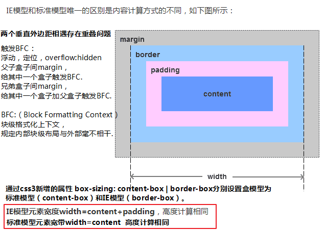
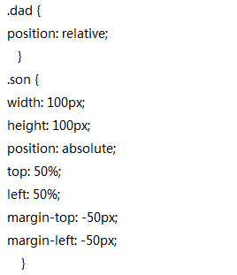
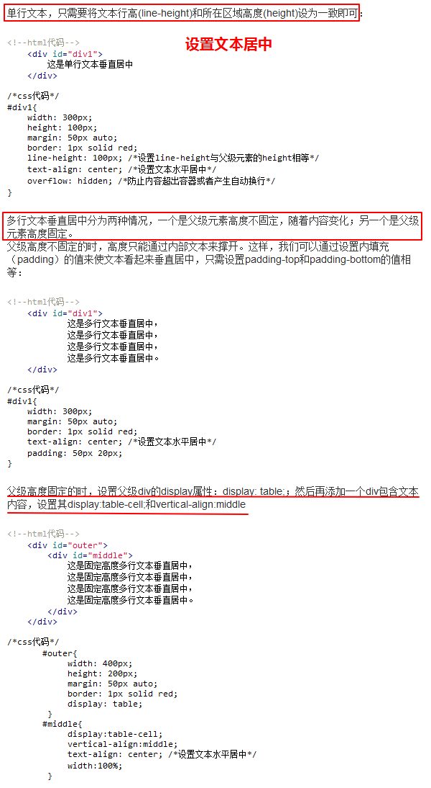
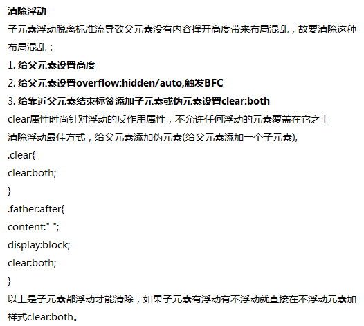
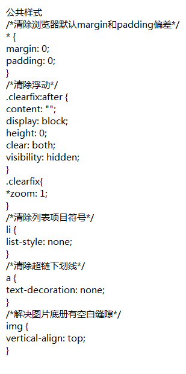
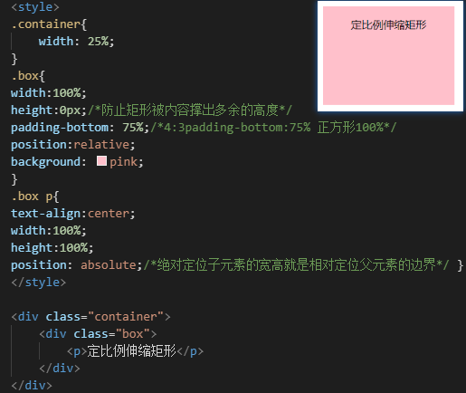

页面布局
盒子模型

怎样通过 CSS 简单而优雅的实现水平、垂直同时居中 。在前CSS 的时代，布局是通过table标签实现的，在table标签的单元格里使用align/valign 来实现水平和垂直方向的对齐。 在CSS时代布局的传统解决方案是基于盒状模型，依赖display属性 + position属性 + float属性。

布局尺寸
px：屏幕分辨率相对大小，1024x768的表示水平方向是1024个像素点，垂直方向是768个像素点。
rpx：rpx微信小程序自适应尺寸规定宽度为750rpx。
em：参考父元素的font-size，1em是1倍父元素font-size值，默认字体16px。
rem：相对根元素html的font-size。
vw/vh：CSS3新单位，view width/height简写，可视窗口的宽高，如果宽度是1200px,那么1vw为12px。
第四代布局
CSS时代的第四代布局：Flex伸缩布局 。首先要设置父容器 display: flex，子元素受弹性盒影响，默认排成一行，如果超出一行，按比例压缩。然后再设置justify-content: center 实现水平居中，最后设置 align-items: center 实现垂直居中。项目的float、clear和vertical-align属性将失效.
容器属性:
flex-direction：伸缩容器的主轴方向，默认值为row项目从左到右排列，column项目从上到下排列。
flex-wrap：换行
justify-content：主轴对齐，5个属性值flex-start | flex-end | center | space-between | space-around。
align-items：侧轴对齐，flex-start | flex-end | center | baseline文字基线 | stretch填满。
项目属性:
order：定义项目的排列顺序。数值越小，排列越靠前，默认为0。
flex-grow：定义项目的放大比例，默认为0即如果存在剩余空间，也不放大。br
flex-shrink：定义伸缩项目收缩的能力，默认为1当空间不足时，都将等比例缩小。属性为0其他项目都为1，则空间不足时前者不缩小。
布局参考
 
